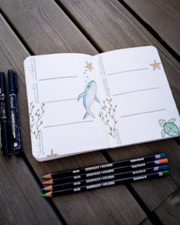

Bujoilu eli bullet journaling on kalenteria ja päiväkirjaa yhdistelevä ajanhallintajärjestelmä. Monelle bujoilu on myös harrastus, jonka parissa pääsee harjoittelemaan mm. piirtämistä, sommittelua, kalligrafiaa tai muuten toteuttamaan luovuutta.
Tällä sivulla esitellään bujoiluharrastusta ja kerrotaan mm. siinä tarvittavista välineistä ja annetaan vinkkejä, mistä löytää lisätietoa aiheesta.
|  |
“The visionary starts with a clean sheet of paper, and re-imagines the world.” – Malcolm Gladwell |